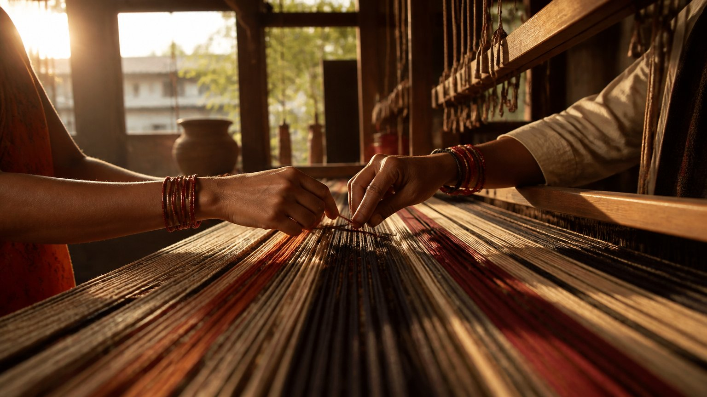

क्या आप किसी ऐसे रिश्ते को पकड़े बैठे हैं जो रोज़ आपको तोड़ रहा है? गुणों की दृष्टि से इसे तामसिक रिश्ता कहा जाता है। आइए समझें कि यह क्या है, और इससे बाहर निकलने की पहली सीढ़ी क्या है।
तो तामसिक रिश्ता क्या है? यह वह संबंध है जिसे व्यक्ति अज्ञान और भय के कारण बहुत लंबे समय तक पकड़े रहता है, भले ही उसमें रोज़ रोना, चिल्लाना और अत्याचार हो। लोग "लोग क्या कहेंगे" के डर, आत्म-मूल्य की कमी, अकेले रह जाने के डर या आदत के कारण उसमें रुके रहते हैं।
तामसिक रिश्ता क्या होता है?
तामसी धृति (steadfastness, टिके रहने की शक्ति) में व्यक्ति किसी संबंध को बहुत लंबे समय तक पकड़े रहता है। यह प्रेमी-प्रेमिका का रिश्ता हो सकता है, पति-पत्नी का, या कोई भी।
पर तमोगुण (अज्ञान और जड़ता का गुण) में यह टिके रहना अज्ञान से होता है। रोना-धोना चलता रहता है, या भय के कारण रिश्ता चलता रहता है, फिर भी व्यक्ति उसे छोड़ता नहीं।
"लोग क्या कहेंगे?"
समाज का डर सबसे बड़ा बंधन बन जाता है। व्यक्ति सोचता है: "मैं क्या करूं? यह मेरा ही निर्णय था। मैंने अपनी पसंद से प्रेम विवाह किया था। अब खराब हो गया है।"
आचार्य जी कहते हैं कि आप इससे कभी भी बाहर आ सकते हैं। कभी एक गलती हुई थी, तो क्या उसे जीवन भर ढोते रहेंगे?
क्या आप भी किसी पुराने निर्णय का बोझ केवल इसलिए उठा रहे हैं क्योंकि वह आपका अपना निर्णय था?
सहना: गुण या अज्ञान?
तामसिक रिश्ते में व्यक्ति भावनात्मक, वाचिक और कभी-कभी शारीरिक अत्याचार भी झेलता है। रोज़ उस पर चिल्लाया जाता है, रोज़ गालियां मिलती हैं, और वह सहता रहता है।
सहिष्णुता एक गुण है, पर यह गुण गुणातीत (जो तीनों गुणों से ऊपर उठ चुका है) के पास होता है। गलत काम को सहना सहिष्णुता नहीं है।
यह सहना वास्तव में आत्म-मूल्य की कमी (low self-worth) का, या अकेले रह जाने के डर का परिणाम है। यहां ज्ञान का अभाव है, और ज्ञान के लिए गुरु के पास जाना होता है।
हम पीड़ा क्यों सहते रहते हैं?
ऐसे लोग पीड़ा केवल इसलिए सहते हैं क्योंकि उन्हें उसकी आदत पड़ गई है। और वे स्वस्थ सीमाएं (healthy boundaries) बनाने का कोई प्रयास नहीं करते।
स्वस्थ सीमा कैसी दिखती है?
विवाह होते ही अपने कुछ नियम स्पष्ट हो जाने चाहिए: यह मुझे अच्छा लगता है, यह नहीं। "यह तुम्हारी परंपरा है, मैंने स्वीकार की।"
मालिक और कर्मचारी के बीच भी नियम और शर्तें शुरू से तय होती हैं। उसी तरह एक बात स्पष्ट होनी चाहिए: अत्याचार सहन नहीं करूंगा। पर अक्सर यह सीमा बनाने की हिम्मत ही नहीं होती।
आत्मविश्वास से "नहीं" कहना सीखो
आचार्य जी कहते हैं कि आत्मविश्वास से "नहीं" कहना सीखो। पूर्ण आत्मविश्वास से "नहीं, मैं नहीं करूंगा" कहने की हिम्मत भीतर होनी चाहिए, समाज में भी और हर जगह भी। इस वाक्य को एक बार लिख लीजिए।
पर "नहीं" कहां कहना है?
यह "नहीं" हर जगह के लिए नहीं है। गुरु ने गुरु-कार्य दिया, तो क्या आप कहेंगे, "नहीं गुरुजी, नहीं करेंगे"? नहीं! वह तो करेंगे, क्योंकि गुरु-कार्य उन्हीं से सीखा है।
"नहीं" वहां कहना है जहां कोई नकारात्मक काम करवाना चाहता है, अत्याचार कर रहा है, "तुम्हें यह करना ही होगा" कहकर दबाव डाल रहा है।
पूरे हक के साथ वह सीमा तय करना आना चाहिए।
आपके जीवन में वह कौन सी जगह है जहां आपको आज आत्मविश्वास से "नहीं" कहने की ज़रूरत है?
मुख्य बातें
- तामसिक रिश्ते में व्यक्ति अज्ञान और भय से दुखद संबंध को पकड़े रहता है।
- "लोग क्या कहेंगे" या "यह मेरा ही निर्णय था" किसी गलती को जीवन भर ढोने का कारण नहीं है।
- अत्याचार सहना सहिष्णुता नहीं; यह आत्म-मूल्य की कमी और अकेलेपन के डर का परिणाम है।
- रिश्तों में शुरू से ही स्वस्थ सीमाएं तय करें: अत्याचार सहन नहीं करूंगा।
- आत्मविश्वास से "नहीं" कहना सीखें, पर केवल अत्याचार और नकारात्मकता के सामने, गुरु-कार्य के सामने नहीं।
आगे पढ़ें
क्या पतिव्रता का अर्थ है चुपचाप सब कुछ सहते जाना? बहुत-सी बहनें यह प्रश्न मन में लेकर जीती हैं। निजी संदेशों में, साधना के समय, यही प्रश्न बार-बार…

हम में से अधिकतर लोग प्रेम करते हैं, पर भीतर ही भीतर हिसाब भी रखते हैं। "मैंने इतना किया, बदले में क्या मिला?" जिस क्षण यह हिसाब शुरू होता है, प्रेम…

क्या आपको कभी लगा है कि रिश्ते बदलते हैं, चेहरे बदलते हैं, पर कहानी वही रहती है? आचार्य उपेंद्र जी इस छोटे से सत्र में संबंधों के तीन प्रकार समझाते…